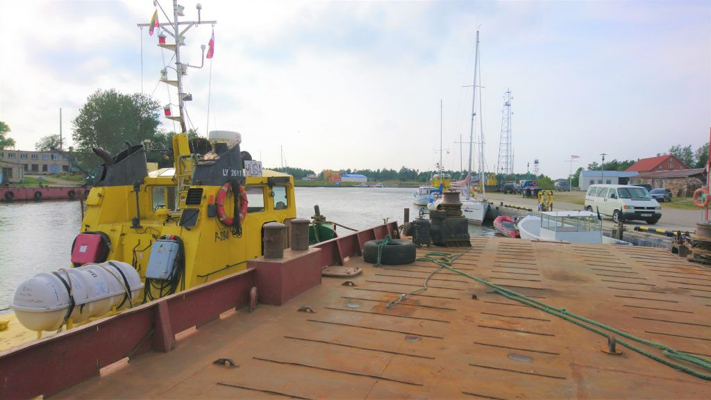
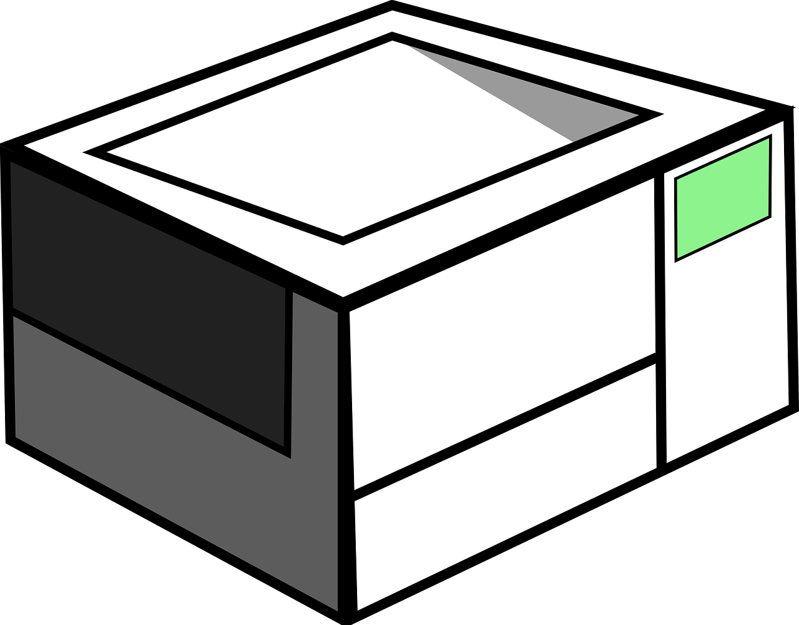

Techninė įranga
2020.10.29 07:52
Įrankiai Pagalba: +370 5 203 4380 service@bttcloud.com Pardavimai: +370 5 203 4385 Facebook LinkedIn EN Cloud paslaugos
Valdomos Cloud paslaugos
PlačiauCloud valdymo ir priežiūros paslaugos
Cloud paslaugų valdymas ir priežiūra Cloud infrastruktūra kaip paslauga Cloud platforminiai sprendimai Cloud kompetencija kaip paslauga IT paslaugosValdomos IT paslaugos
PlačiauIT infrastruktūros valdymas ir priežiūra
Moderni darbo vieta Serveriai ir sistemos Duomenų perdavimo sprendimai Kompetencija kaip paslauga ĮrangaĮranga verslui
PlačiauTeikiamos įrangos paslaugos
Lenovo Workstation AKCIJA Techninė įranga Programinė įranga Lenovo E serija Aktualūs pasiūlymai Naujienos Apie mus Apie mus Karjera Triatlono komanda Kontaktai SERVICE DESK Įrankiai Pagalba: +370 5 203 4380 service@bttcloud.com Pardavimai: +370 5 203 4385 SERVICE DESK Cloud paslaugos Valdomos Cloud paslaugos Cloud paslaugų valdymas ir priežiūra (angl. Managed Cloud Services - MCS) Cloud infrastruktūra kaip paslauga Cloud platforminiai sprendimai Cloud kompetencija kaip paslauga IT paslaugos Valdomos IT paslaugos Moderni darbo vieta Serveriai ir sistemos Duomenų perdavimo sprendimai Kompetencija kaip paslauga Įranga Įranga verslui Lenovo Workstation Akcija Techninė įranga Programinė įranga Lenovo E serija Aktualūs pasiūlymai Naujienos Apie mus Apie mus Karjera Triatlono komanda KontaktaiTechninė įranga
Techninė įranga yra visos IT infrastruktūros stuburas. Komplektuojant organizacijos technologinę infrastruktūrą svarbu atkreipti dėmesį į jos vientisumą, konkretų funkcionalumą stengiantis nedubliuoti funkcijų.
Susisiekite Paslaugos Tradicinę modernios darbo vietos
infrastruktūrą sudaro
IT įranga verslui
PlačiauDarbo stotys
PlačiauPeriferinė biuro įranga
PlačiauBTT Cloud dirba su geriausiais pasaulyje įrangos gamintojais. Galime pasiūlyti platų spektrą, tačiau orientuojamės į aukščiausius kokybės ir patikimumo standartus.
Kompiuteriai ir darbo stotys Lenovo, HP, Dell Periferinė biuro įranga HP, Konica Minolta, Canon Tinklų įranga Aruba, Cisco, SophosSusisiekite su mumis
Pasirinkite kaip norite su mumis susisiekti. Galite rezervuoti susitikimą arba galite gauti individualų pasiūlymą. Gavę užklausą susisieksime su jumis per 1 d.d.
Nereikia investuoti į kompetenciją ir motyvaciją Mokate tik už atliktus darbus Tiksliai planuojamos, fiksuotos išlaidos IT infrastruktūros išlaikymui Absoliutus lankstumas valdant paslaugų apimtį pagal poreikį Gauti pasiūlymą Susitikimas Ačiū. Jūsų žinutę gavome, susisieksime kaip galima greičiau. Kažkas ne taip. Bandykite dar kartą. Susitikimas gyvai Vaizdo skambutis Paprastas skambutis Ačiū. Jūsų žinutę gavome, susisieksime kaip galima greičiau. Kažkas ne taip. Bandykite dar kartą. Ačiū. Jūsų žinutę gavome, susisieksime kaip galima greičiau. Kažkas ne taip. Bandykite dar kartą. Ačiū. Jūsų žinutę gavome, susisieksime kaip galima greičiau. Kažkas ne taip. Bandykite dar kartą. „Patikimas partneris, kurį galiu rekomenduoti.“ „Džiaugiamės bendradarbiaudami su aukštos kompetencijos partneriu.“ „Turime IT partnerį, kuris žino, ką daro.“Teikiamos įrangos paslaugos
Techninė įranga Programinė įranga Lenovo E serija Aktualūs pasiūlymaiNaujienlaiškis
Ačiū, kad užsiprenumeravote! Klaida! Bandykite dar kartą.Prenumeruokite BTT Cloud naujienlaiškį ir gaukite tikrai specialius pasiūlymus pirmieji!
Patikimas valdomų paslaugų tiekėjas verslui ir viešajam sektoriui. Planuojame, valdome ir prižiūrime visą klientų Cloud ir IT infrastruktūrą.
SERVICE DESK Mūsų paslaugos Cloud paslaugos IT paslaugos Įranga verslui UAB BTT Group Kontaktai Naujienos Apie mus Karjera 24/7 Pagalba Įrankiai servisas@bttcloud.com +370 5 203 4380 BTT Cloud © 2020 Privatumo politika Facebook LinkedInNaujienlaiškis
Prenumeruokite BTT Cloud naujienlaiškį ir gaukite tikrai specialius pasiūlymus pirmieji!
Ačiū, kad užsiprenumeravote! Klaida! Bandykite dar kartą. EN- Techninė įranga | UCS
- Techninė įranga „Porsche Tequipment Genuine Access ...
- Techninė įranga - BTT Cloud
- KĄ DARYTI, KAI ESATE APGAUTI INTERNETE - TECHNINĖ ĮRANGA ...
- Techninė įranga – ELIP (Enciklopedija Lietuvai ir pasauliui)
- Techninė įranga - Wikiwand
- KĄ REIŠKIA „SAAS“? - TECHNINĖ ĮRANGA - 2020
- Mažmeninė techninė įranga - BS/2
- Techninė įranga | Egledagyte's Blog
- Techninė Įranga | September 2020
- Techninė įranga | UCS
Mažmeninė techninė įranga Tai „Diebold Nixdorf“ atsiskaitymo kasos ir POS sistemos „Beetle“, periferiniai įrenginiai (spausdintuvai, skeneriai, elektroniniai kainynai, grynųjų pinigų saugyklos), banknotų priėmimo automatai, savitarnos kasos ir mokėjimo sistemos („PayTower“), taros priėmimo automatai („Revendo“) ir kt.
- Techninė įranga „Porsche Tequipment Genuine Access ...
Techninė įranga „Porsche Tequipment“ kuriama pasitelkus per 20 metų sukauptą patirtį ir žinias, todėl jai būdinga viena – „Porsche“ įprasta kokybė. Ji kuriama įsivaizduojant visą automobilį, tačiau idealiai pritaikant jūsų „Porsche“. Šiuos aukštos kokybės produktus lengvai pritaikysite savo „Porsche ...
- Techninė įranga - BTT Cloud
Techninė įranga- tai kompiuterių aparatinė įranga, kurios pagalba mes gebame "bendrauti" su progr. įranga. Paprastai techninę įrangą sudaro tokie komponentai: monitorius, centrinis korpusas, klaviatūra, pelė, spausdintuvas ir t.t. Monitorius- tai įrenginys, kurio pagalba mes "matome" tai, ką mums atvaizduoja programinė įranga.
- KĄ DARYTI, KAI ESATE APGAUTI INTERNETE - TECHNINĖ ĮRANGA ...
Techninė Įranga. Kas yra DCIM failas? 2020; Jei fotografavote tik kino kameromi, labai tikėtina, kad niekada nepamatyite DCIM failo. Telefonų u fotoaparatai populiarėjant, labiau tikėtina, kad šių failų neraite. Kadangi gamintojai gamina tiek d...
- Techninė įranga – ELIP (Enciklopedija Lietuvai ir pasauliui)
Techninė įranga (aparatinė įranga, angl. hardware, pranc. matériel) informacinėse technologijose – informacijos apdorojimo sistemos fizinių komponentų visuma arba tos visumos dalis. Kompiuterių techninė įranga apima ir visas fizines kompiuterio dalis, bet ne programinę įrangą, valdančią šias dalis.
- Techninė įranga - Wikiwand
techninė įranga (Informatika) - informacijos apdorojimo sistemos fizinių komponentų visuma arba tos visumos dalis. Pvz. kompiuteriai, išoriniai įrenginiai. Žodžių junginį sudaro žodžiai: techninė; įranga; Vertimai
- KĄ REIŠKIA „SAAS“? - TECHNINĖ ĮRANGA - 2020
Techninė įranga informacinėse technologijose – informacijos apdorojimo sistemos fizinių komponentų visuma arba tos visumos dalis.[1] Kompiuterių techninė įranga apima ir visas fizines kompiuterio dalis, bet ne programinę įrangą, valdančią šias dalis.
- Mažmeninė techninė įranga - BS/2
Verslo procesų automatizavimo techninė įranga: POS terminalai, spausdintuvai, kasos aparatai ir kita techninė įranga individualiems verslo poreikiams.
- Techninė įranga | Egledagyte's Blog
Techninė įranga. Skaitmeniniai nivelyrai; Trimble TDC100; Trimble X7; Trimble X7; Trimble X7; Trimble SiteVision; DJI Phantom 4 RTK; DJI Phantom 4 RTK; Bepiločiai orlaiviai. DJI Matrice 300 RTK; DJI Phantom 4 RTK; DJI Mavic 2 Enterprise; DJI Phantom 4 Multispektrinis; DJI Matrice 200/210 serija;
- Techninė Įranga | September 2020
„Software as a Service“ (SaaS) yra procesas, kurio metu programinė įranga teikiama iš anksto nustatytu prenumeratos pagrindu; paprastai kas mėnesį ar kasmet. Štai ką reikia žinoti apie „SaaS“ platformą.
Mažmeninė techninė įranga Tai „Diebold Nixdorf“ atsiskaitymo kasos ir POS sistemos „Beetle“, periferiniai įrenginiai (spausdintuvai, skeneriai, elektroniniai kainynai, grynųjų pinigų saugyklos), banknotų priėmimo automatai, savitarnos kasos ir mokėjimo sistemos („PayTower“), taros priėmimo automatai („Revendo“) ir kt.
Techninė įranga „Porsche Tequipment“ kuriama pasitelkus per 20 metų sukauptą patirtį ir žinias, todėl jai būdinga viena – „Porsche“ įprasta kokybė. Ji kuriama įsivaizduojant visą automobilį, tačiau idealiai pritaikant jūsų „Porsche“. Šiuos aukštos kokybės produktus lengvai pritaikysite savo „Porsche ...
Techninė įranga- tai kompiuterių aparatinė įranga, kurios pagalba mes gebame "bendrauti" su progr. įranga. Paprastai techninę įrangą sudaro tokie komponentai: monitorius, centrinis korpusas, klaviatūra, pelė, spausdintuvas ir t.t. Monitorius- tai įrenginys, kurio pagalba mes "matome" tai, ką mums atvaizduoja programinė įranga.
Techninė Įranga. Kas yra DCIM failas? 2020; Jei fotografavote tik kino kameromi, labai tikėtina, kad niekada nepamatyite DCIM failo. Telefonų u fotoaparatai populiarėjant, labiau tikėtina, kad šių failų neraite. Kadangi gamintojai gamina tiek d...
Techninė įranga (aparatinė įranga, angl. hardware, pranc. matériel) informacinėse technologijose – informacijos apdorojimo sistemos fizinių komponentų visuma arba tos visumos dalis. Kompiuterių techninė įranga apima ir visas fizines kompiuterio dalis, bet ne programinę įrangą, valdančią šias dalis.
techninė įranga (Informatika) - informacijos apdorojimo sistemos fizinių komponentų visuma arba tos visumos dalis. Pvz. kompiuteriai, išoriniai įrenginiai. Žodžių junginį sudaro žodžiai: techninė; įranga; Vertimai
Techninė įranga informacinėse technologijose – informacijos apdorojimo sistemos fizinių komponentų visuma arba tos visumos dalis.[1] Kompiuterių techninė įranga apima ir visas fizines kompiuterio dalis, bet ne programinę įrangą, valdančią šias dalis.
Verslo procesų automatizavimo techninė įranga: POS terminalai, spausdintuvai, kasos aparatai ir kita techninė įranga individualiems verslo poreikiams.
Techninė įranga. Skaitmeniniai nivelyrai; Trimble TDC100; Trimble X7; Trimble X7; Trimble X7; Trimble SiteVision; DJI Phantom 4 RTK; DJI Phantom 4 RTK; Bepiločiai orlaiviai. DJI Matrice 300 RTK; DJI Phantom 4 RTK; DJI Mavic 2 Enterprise; DJI Phantom 4 Multispektrinis; DJI Matrice 200/210 serija;
„Software as a Service“ (SaaS) yra procesas, kurio metu programinė įranga teikiama iš anksto nustatytu prenumeratos pagrindu; paprastai kas mėnesį ar kasmet. Štai ką reikia žinoti apie „SaaS“ platformą.
 